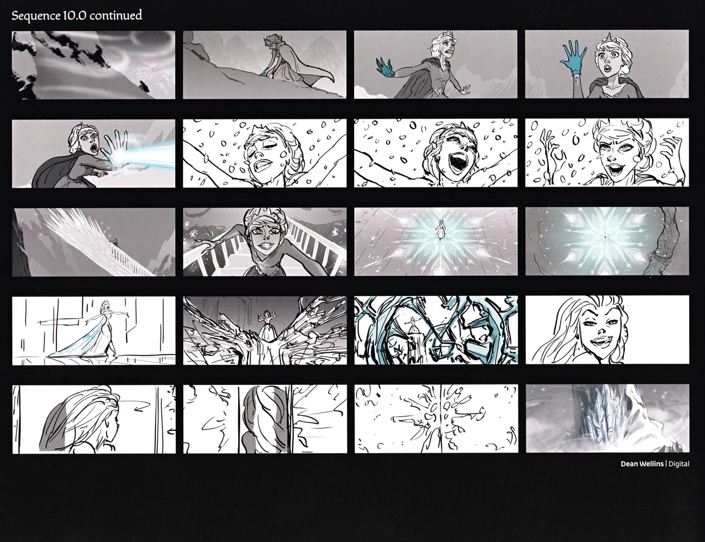
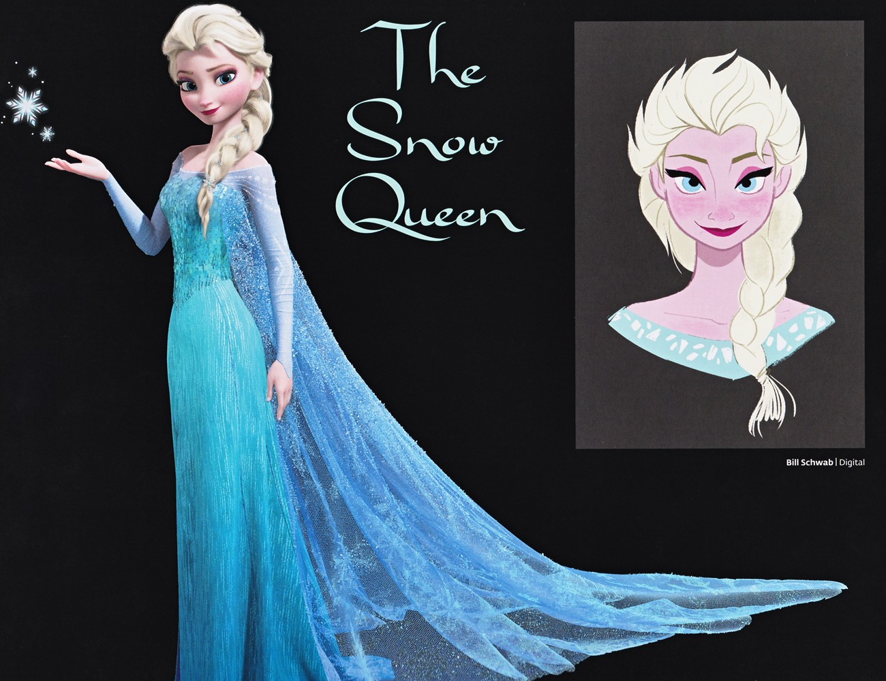
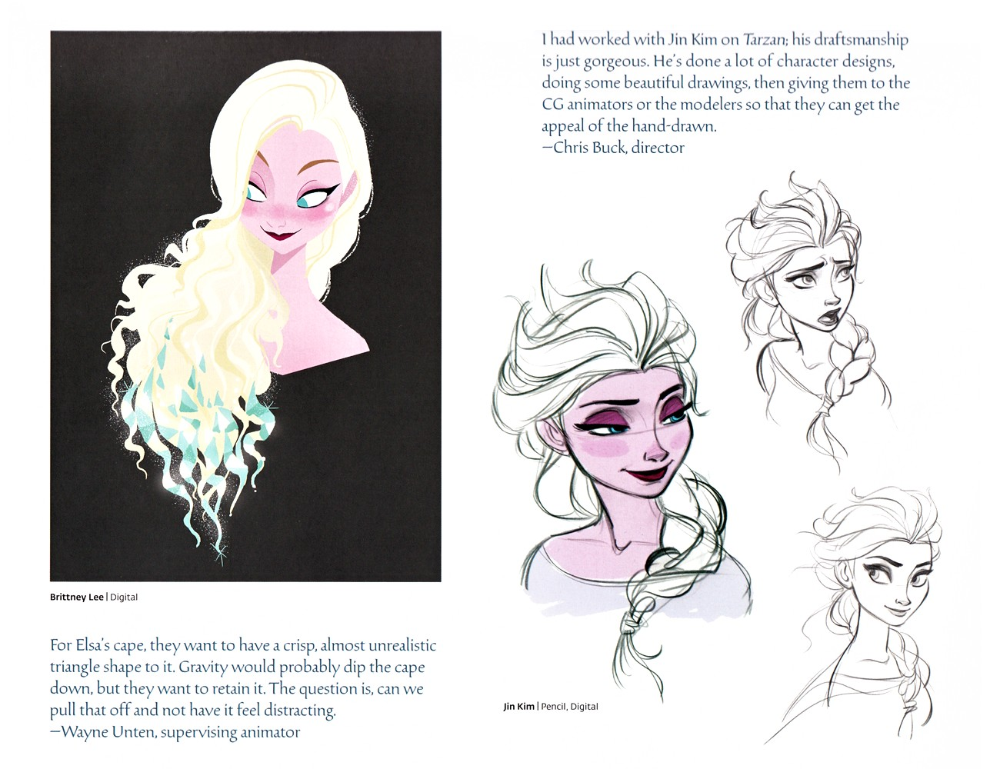
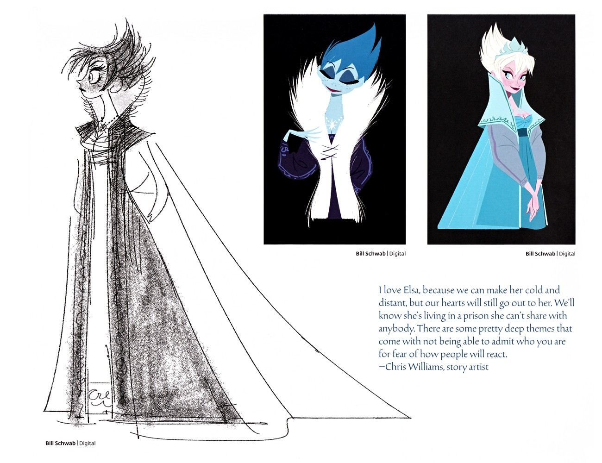
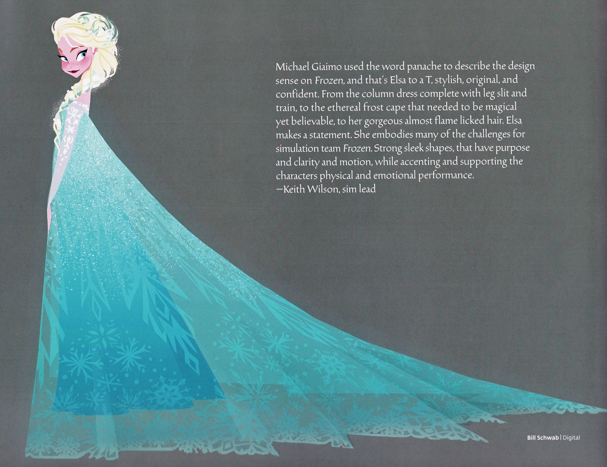
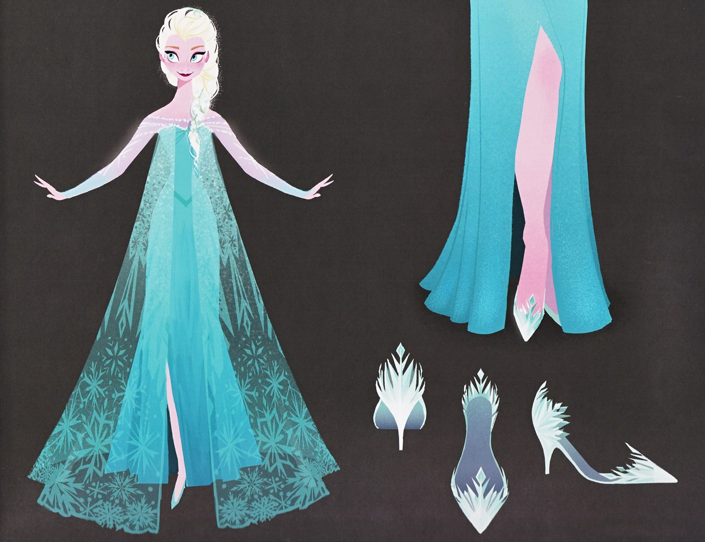
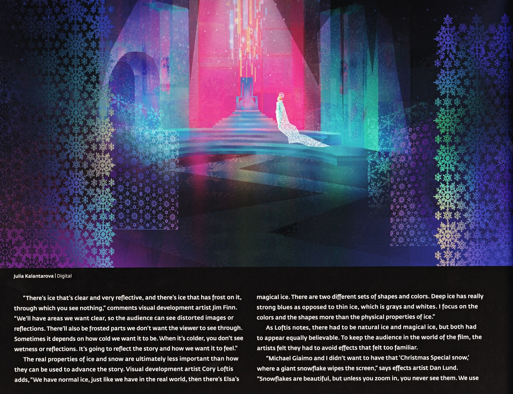

❄️ 艾莎 · 设定集精选
艾莎 · 设定集精选
官方设定集里的艾莎：造型、雪后与冰宫
F1·F2
主电影
中/英
双语
🎬 北山的歌 · Let It Go 分镜

序列 10.0 – 艾莎的歌
本页聚焦 Sequence 10.0（艾莎的歌，即《Let It Go》）：上方 3×3 分镜网格（Paul Briggs 作）展示艾莎在拥挤大厅施法、独行远山、冰晶蔓延；下方为 Dan Lund 的数字美术图——从器皿升起的有机冰晶王冠、冰岩中发光的蓝色裂隙、立于开裂冰面上的艾莎剪影。此页集中呈现艾莎"雪后"视觉母题（F1设定集原页）

Sequence 10.0 续·艾莎施法
本页以密集分镜展示 Elsa 在「Let It Go」前段逃离王宫、登山并首次释放魔法的情绪递进——从震惊、试探到狂喜与掌控。是角色情绪与魔法视觉化发展的关键分镜参考。（F1设定集原页）
👸 「雪后」的诞生

衔接「The Snow Queen
本页以 “The Snow Queen” 小节标题开启艾莎“冰雪女王”形象设计：一幅为标志性格外全身定妆——及地冰蓝长裙、闪光半透披风拖曳长裾、铂金麻花辫垂肩、掌心浮起小雪花，立于纯黑背景；另一幅为 Bill Schwab 绘的亲和肖像——蓬松后掠铂金发、浅青绿胸衣配领口白雪花纹。确立雪后最终视觉形象。（F1设定集原页）

Elsa 雪后造型探索
本页汇集 Elsa 雪后的早期探索：Brittney Lee 的数字化肖像（长卷铂金发尾化为青绿冰晶），以及 Jin Kim 的铅笔表情/发型变体研究。动画总监 Wayne Unten 提到希望 Elsa 的斗篷保持挺括、近乎不真实的三角形轮廓，即便受重力影响也不下垂；导演 Chris Buck 盛赞 Jin Kim （F1设定集原页）

Elsa 雪后定稿推进
本页展示 Elsa 雪后造型的渐进：优雅而冷峻的全身铅笔素描（超长斗篷、结构肩线、柱形长裙），到白毛领、深紫袖与胸前雪花母题的风格化稿，最终收敛为绿松石色礼服配浅青短斗篷/衣领、长袖、双手交握的定稿微笑形象。故事板艺术家 Chris Williams 称喜爱 Elsa 之处在于她冷峻疏离却仍让人心疼——她活在一个无法与（F1设定集原页）

Elsa 雪后完成版定稿
本页定格 Elsa 完成版雪后造型：绿松石色礼服配雪花刺绣薄纱罩层、高开衩与延展为长拖尾的半透明闪亮斗篷，侧面优雅姿态。模拟主管 Keith Wilson 引美术指导 Giaimo 的"panache（派头/张扬）"一词概括全片设计感——Elsa 正是时髦、原创、自信的化身；从带开衩与拖尾的柱形裙、需既魔幻又可信的霜冻（F1设定集原页）

Elsa 雪后服装参考表
本页为纯设定参考图：上方为 Elsa 雪后全身正面标准像（绿松石礼服、雪花纹薄纱斗篷、高开衩、冰晶鞋）；中部特写裙摆开衩，露出粉色衬裙与尖头冰鞋；下方为鞋履三视细节图（正面、侧/后、四分之三），每双皆呈水晶雪花或冰刃造型。是服装与道具部门可直接参照的标准图。（F1设定集原页）
👗 造型研究

Elsa 面部、发型与成长
本页分三区：左上 Bill Schwab 绘制的 Elsa 面部肖像（戴冠正面与侧颜）；右上 Victoria Ying 的繁复盘发配蕾丝领前后两视图；底部为幼年 Elsa 四个成长阶段（浅蓝、带纹深蓝、酒红、纯蓝裙），发型由披散渐变为编辫再到盘发。（F1设定集原页）

艾莎服装剪影三方案
三款艾莎服装剪影：左侧黑底、白发后梳的淡蓝白侧影，手写注"MAKE COOL OFF-WHITE"（做成冷调灰白）；中央为全彩飘动冰蓝长裙、卷发、双臂张开拖着披风；右侧紫色底背面图，长拖尾自肩垂落，蓝发白衣一路垂至尖头鞋。（F1设定集原页）
❄️ 冰宫中的艾莎

第三章「冰宫」· 艾莎冰裙阶梯与冰之质感论述
Julia Kalantarova 的图描绘艾莎身着冰裙立于发光冰宫大阶梯顶端，四周为雪花纹样巨柱（品红/青/蓝光）。Jim Finn 指出冰分“清澈反光”与“覆霜不透明”两类，用以引导视线与叙事冷暖；Cory Loftis 区分“自然冰”与“艾莎魔法冰”两套形色（深冰强蓝、薄冰灰白），重在色彩与形状而非物理。Dan （F1设定集原页）

第三章「冰宫」· 艾莎雪花平台冰洞
Kevin Nelson 的数字绘制展现艾莎身处深蓝冰窟，伫立于巨大的发光雪花平台之上，错综的雪花形态在空中螺旋环绕，强调“雪花”作为空间生成母题的运用。（F1设定集原页）

Elsa 与 Anna 对峙及姐妹表演
本页围绕姐妹对峙与互动：Claire Keane 的炭笔/粉彩稿描绘高大阴森、深袍乱蓝发的 Elsa 与娇小认真、绿裙的 Anna 紧张对峙；动画总监 Hyrum Osmond 戏称自己"从我姐妹们所有的吵架里汲取灵感"。Bill Schwab 另绘 Elsa 居高施放冰/光束、地上防御姿态 Anna 的铅笔稿。绑定主（F1设定集原页）
💡 图注说明
本页全部图版来自《The Art of Frozen》与《The Art of Frozen II》官方设定集原书扫描，图注经原书逐页笔记核对。
📌 本页要点
本页核心要点：①🎬 北山的歌 · Let It Go 分镜；②👸 「雪后」的诞生；③👗 造型研究；④❄️ 冰宫中的艾莎。来源：电影正典、官方设定集与官方小说综合梳理。